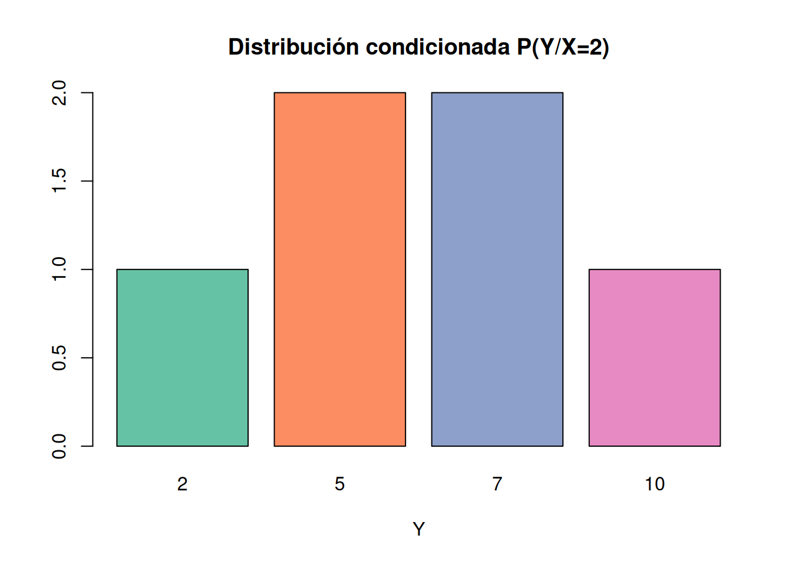

# Librerías y configuración
library(RColorBrewer)
coul <- brewer.pal(8, "Set2") # Paleta de colores para diagramasEstadística Descriptiva - Ejercicios Tema 2
Ejercicios Básicos
Ejercicio 1
En los siguientes ejemplos de estudios estadı́sticos, identifique la variables dependiente y la variable independiente:
- Sobre un material:
- Propiedades – Temperatura.
TipSolución
| Variable independiente | Variable dependiente |
|---|---|
| Temperatura | Propiedades |
- Sobre medioambiente, en una región del planeta:
- Clima – Resultado de las cosechas.
- Alimentación de los animales – Sequı́a de la zona donde habitan.
- Uso de envases reutilizables – Cantidad de basura que se produce en una ciudad.
TipSolución
| Variable independiente | Variable dependiente |
|---|---|
| Clima | Resultado de las cosechas |
| Sequía de la zona donde habitan | Alimentación de los animales |
| Uso de envases reutilizables | Cantidad de basura que se produce en una ciudad |
- Sobre la salud humana:
- Tiempo de actividad fı́sica – Tiempo de sueño.
- Fatiga ocular – Tiempo de uso de los dispositivos móviles.
- Problemas cardı́acos – Niveles de estrés.
- Humedad en el aire – Número de casos de alergia.
TipSolución
| Variable independiente | Variable dependiente |
|---|---|
| Tiempo de actividad física | Tiempo de sueño |
| Tiempo de uso de los dispositivos móviles | Fatiga ocular |
| Niveles de estrés | Problemas cardíacos |
| Humedad en el aire | Número de casos de alergia |
- Sobre economı́a y empresa
- Demanda de un producto – Precio del producto
- Tamaño de las ciudades – Frecuencia del transporte.
TipSolución
En el caso de la demanda de un producto y su precio, realmente no hay una variable independiente clara, ya que la relación puede ser bidireccional.
| Variable independiente | Variable dependiente |
|---|---|
| Tamaño de las ciudades | Frecuencia del transporte |
- Sobre educación
- Rendimiento académico – Método de estudio.
TipSolución
| Variable independiente | Variable dependiente |
|---|---|
| Método de estudio | Rendimiento académico |
- Sobre Ciberseguridad e Inteligencia Artificial
- Tasa de detección de amenazas – Precisión del modelo de clasificación.
- Cantidad de datos de entrenamiento – Eficacia del modelo de detección de anomalı́as.
- Tiempo de respuesta del sistema – Complejidad del algoritmo de IA.
- Número de falsos positivos – Sensibilidad del modelo.
TipSolución
| Variable independiente | Variable dependiente |
|---|---|
| Precisión del modelo de clasificación | Tasa de detección de amenazas |
| Cantidad de datos de entrenamiento | Eficancia del modelo de detección de anomalías |
| Complejidad del algoritmo de IA | Tiempo de respuesta del sistema |
| Sensibilidad del modelo | Número de falsos positivos |
Ejercicio 2
Demostrar la igualdad de las dos siguientes fórmulas que permiten calcular la covarianza:
\[ Cov(X, Y) = \sum_{i=1}^{k} \sum_{j=1}^{p} (x_i - \bar{x}) \cdot (y_j - \bar{y}) \cdot f_{ij} = \sum_{i=1}^{k} \sum_{j=1}^{p} x_i \cdot y_j \cdot f_{ij} - \bar{x} \bar{y} \]
o bien, escrito en términos de momentos
\[ \mu_{11} = m_{11} - m_{10} \cdot m_{01} \]
TipSolución
\[ \begin{align} Cov(X, Y) &= \sum_{i=1}^{k} \sum_{j=1}^{p} (x_i - \bar{x}) \cdot (y_j - \bar{y}) \cdot f_{ij} = \\ &= \sum_{i=1}^{k} \sum_{j=1}^{p}{(x_i \cdot y_j - x_i \cdot \bar{y} - \bar{x} \cdot y_j + \bar{x}\bar{y}) \cdot f_{ij}} = \\ &= \sum_{i=1}^{k} \sum_{j=1}^{p}{x_i \cdot y_j \cdot f_{ij} - x_i \cdot \bar{y} \cdot f_{ij} - \bar{x} \cdot y_j \cdot f_{ij} + \bar{x}\bar{y} \cdot f_{ij}} = \\ &= \sum_{i=1}^{k} \sum_{j=1}^{p}{x_i y_j f_{ij}} - \sum_{i=1}^{k} \sum_{j=1}^{p}{x_i \bar{y} f_{ij}} - \sum_{i=1}^{k} \sum_{j=1}^{p}{\bar{x} y_j f_{ij}} + \sum_{i=1}^{k} \sum_{j=1}^{p}{\bar{x}\bar{y} f_{ij}} = \\ &= \sum_{i=1}^{k} \sum_{j=1}^{p}{x_i y_j f_{ij}} - \bar{y} \sum_{i=1}^{k} \sum_{j=1}^{p}{x_i f_{ij}} - \bar{x} \sum_{i=1}^{k} \sum_{j=1}^{p}{ y_j f_{ij}} + \bar{x}\bar{y} \sum_{i=1}^{k} \sum_{j=1}^{p}{ f_{ij}} = \\ &= \sum_{i=1}^{k} \sum_{j=1}^{p}{x_i y_j f_{ij}} - \bar{y}\bar{x} - \bar{x}\bar{y} + \bar{x}\bar{y} = \sum_{i=1}^{k} \sum_{j=1}^{p} x_i \cdot y_j \cdot f_{ij} - \bar{x} \, \bar{y} \end{align} \]
Ejercicio 3
Estudiar en qué medida le afectan los cambios de origen y de escala al coeficiente de correlación lineal.
TipSolución
El coeficiente de correlación lineal se define como: \[ r = \frac{Cov(X, Y)}{\sigma_x \sigma_y} \]
Cambio de origen: Sean \(X' = X + a\) , \(Y' = Y + b\), donde \(a\) y \(b\) son constantes.
- \(Cov(X', Y') = Cov(X + a, Y + b) = Cov(X, Y)\)
NoteDemostración
Sean \(X' = X + a\) e \(Y' = Y + b\), donde \(a\) y \(b\) son constantes.
\[ Cov(X', Y') = \sum_{i=1}^{k} \sum_{j=1}^{p} (x'_i - \bar{x}') \cdot (y'_j - \bar{y}') \cdot f_{ij} \]
Donde:
- \(x'_i = x_i + a\)
- \(y'_j = y_j + b\)
- \(\bar{x}' = \bar{x} + a\) (la media también se desplaza por la constante)
- \(\bar{y}' = \bar{y} + b\)
Sustituyendo: \[ \begin{align} Cov(X', Y') &= \sum_{i=1}^{k} \sum_{j=1}^{p} [(x_i + a) - (\bar{x} + a)] \cdot [(y_j + b) - (\bar{y} + b)] \cdot f_{ij} \\ &= \sum_{i=1}^{k} \sum_{j=1}^{p} (x_i + a - \bar{x} - a) \cdot (y_j + b - \bar{y} - b) \cdot f_{ij} \\ &= \sum_{i=1}^{k} \sum_{j=1}^{p} (x_i - \bar{x}) \cdot (y_j - \bar{y}) \cdot f_{ij} \\ &= Cov(X, Y) \end{align} \]
La razón por la que el cambio de origen no afecta la covarianza es que tanto los valores individuales como la media se desplazan por la misma cantidad. Por tanto, las desviaciones respecto a la media \((x_i - \bar{x})\) y \((y_j - \bar{y})\) permanecen inalteradas, y la covarianza mide precisamente estas desviaciones conjuntas.
- \(\sigma_{x'} = \sigma_x\) y \(\sigma_{y'} = \sigma_y\) (visto en el primer tema)
Por tanto: \[ r_{x'y'} = \frac{Cov(X', Y')}{\sigma_{x'} \sigma_{y'}} = \frac{Cov(X, Y)}{\sigma_x \sigma_y} = r_{xy} \]
Cambio de escala: Sean \(X' = cX\) , \(Y' = dY\), donde \(c > 0\) y \(d > 0\) son constantes.
- \(Cov(X', Y') = Cov(cX, dY) = cd \cdot Cov(X, Y)\)
- \(\sigma_{x'} = c\sigma_x\) y \(\sigma_{y'} = d\sigma_y\)
Por tanto: \[ r_{X'Y'} = \frac{Cov(X', Y')}{\sigma_{x'} \sigma_{y'}} = \frac{cd \cdot Cov(X, Y)}{c\sigma_x \cdot d\sigma_y} = \frac{Cov(X, Y)}{\sigma_x \sigma_y} = r_{XY} \]
Ejercicio 4
En la elaboración de la siguiente tabla de frecuencias de la variable \((X, Y)\) se ha cometido un error.
| \(Y \backslash X\) | 0 | 1 | 2 | 3 | 4 | 5 | |
|---|---|---|---|---|---|---|---|
| \([0,4]\) | 3 | 3 | 1 | 0 | 0 | 0 | 7 |
| \((4,6]\) | 3 | 4 | 2 | 0 | 0 | 0 | 9 |
| \((6,8]\) | 1 | 3 | 2 | 1 | 0 | 0 | 7 |
| \((8,12]\) | 0 | 0 | 1 | 2 | 3 | 2 | 9 |
| 7 | 11 | 6 | 3 | 3 | 2 | 32 |
Se pide:
- Detectar y corregir la errata.
TipSolución
| \(Y \backslash X\) | 0 | 1 | 2 | 3 | 4 | 5 | |
|---|---|---|---|---|---|---|---|
| \([0,4]\) | 3 | 3 | 1 | 0 | 0 | 0 | 7 |
| \((4,6]\) | 3 | 4 | 2 | 0 | 0 | 0 | 9 |
| \((6,8]\) | 1 | 3 | 2 | 1 | 0 | 0 | 7 |
| \((8,12]\) | 0 | 1 | 1 | 2 | 3 | 2 | 9 |
| 7 | 11 | 6 | 3 | 3 | 2 | 32 |
- Representar la distribución condicionada \(P(Y/X=2)\) y calcular el sesgo y la curtosis.
TipSolución
Distribución condicionada \(P(Y/X=2)\):
| \(L_{i-1} - L_i\) | \(n_i\) | \(f_i\) | \(y_i\) (marca de clase) |
|---|---|---|---|
| \([0,4]\) | 1 | 1/6 | 2 |
| \((4,6]\) | 2 | 2/6 | 5 |
| \((6,8]\) | 2 | 2/6 | 7 |
| \((8,12]\) | 1 | 1/6 | 10 |
| 6 |
Sesgo: Simplemente observando la tabla, podemos ver que la distribución es simétrica, por lo que el sesgo es 0.
Curtosis:
\[ \text{Curtosis} = \frac{\mu_4}{\sigma^4} - 3 \]
\[ \bar{x} = 2 \cdot \frac{1}{6} + 5 \cdot \frac{2}{6} + 7 \cdot \frac{2}{6} + 10 \cdot \frac{1}{6} = 6 \]
\[ \mu_4 = \sum{(x_i - \bar{x})^4 \cdot f_i} = (2 - 6)^4 \cdot \frac{1}{6} + ... + (10 - 6)^4 \cdot \frac{1}{6} = 86 \]
\[ \sigma^4 = (\sigma^2)^2 = (\sum{(x_i - \bar{x})^2 \cdot f_i})^2 = ((2 - 6)^2 \cdot \frac{1}{6} + ... + (10 - 6)^2 \cdot \frac{1}{6})^2 = 36 \]
\[ \frac{\mu_4}{\sigma^4} - 3 = \frac{86}{36} - 3 \approx -0.61 < 0 \Rightarrow \text{Menos apuntamiento que la normal} \]
TipSolución en R
# Datos
y <- c(2, 5, 5, 7, 7, 10)
# Representación gráfica
barplot(table(y), col = coul, main = "Distribución condicionada P(Y/X=2)", xlab = "Y")
# Medidas de tendencia central
media <- mean(y)
# Medidas de dispersión
varp=function(x) var(x)*(length(x)-1)/length(x) # varianza poblacional
varianza <- varp(y)
# Medidas de simetría y apuntamiento
# para calcular g1 y g2 necesitamos definir las funciones de momento central y desviación típica poblacional
sdp=function(x) sqrt(varp(x)) # desviación típica poblacional
gmomento=function(x,c,r) mean((x-c)^r) # momento general
cmomento=function(x,r) gmomento(x,mean(x),r) # momento central de orden r
g1=function(x) cmomento(x,3)/sdp(x)^3 # asimetría
g2=function(x) cmomento(x,4)/sdp(x)^4-3 # curtosis
asimetria <- g1(y)
curtosis <- g2(y)
if(asimetria > 0) {
cat("La distribución es asimétrica positiva (g1 =", asimetria, ")\n")
} else if(asimetria < 0) {
cat("La distribución es asimétrica negativa (g1 =", asimetria, ")\n")
} else {
cat("La distribución es simétrica (g1 =", asimetria, ")\n")
}La distribución es simétrica (g1 = 0 )if(curtosis > 0) {
cat("La distribución tiene más apuntamiento que la normal (g2 =", curtosis, ")\n")
} else if(curtosis < 0) {
cat("La distribución tiene menos apuntamiento que la normal (g2 =", curtosis, ")\n")
} else {
cat("La distribución tiene el mismo apuntamiento que la normal (g2 =", curtosis, ")\n")
}La distribución tiene menos apuntamiento que la normal (g2 = -0.6111111 )Determine la dependencia de las variables.
Calcular las rectas de regresión de \(X\) sobre \(Y\) y de \(Y\) sobre \(X\).
Calcular el coeficiente de correlación lineal y la varianza residual del modelo lineal \(Y/X\).